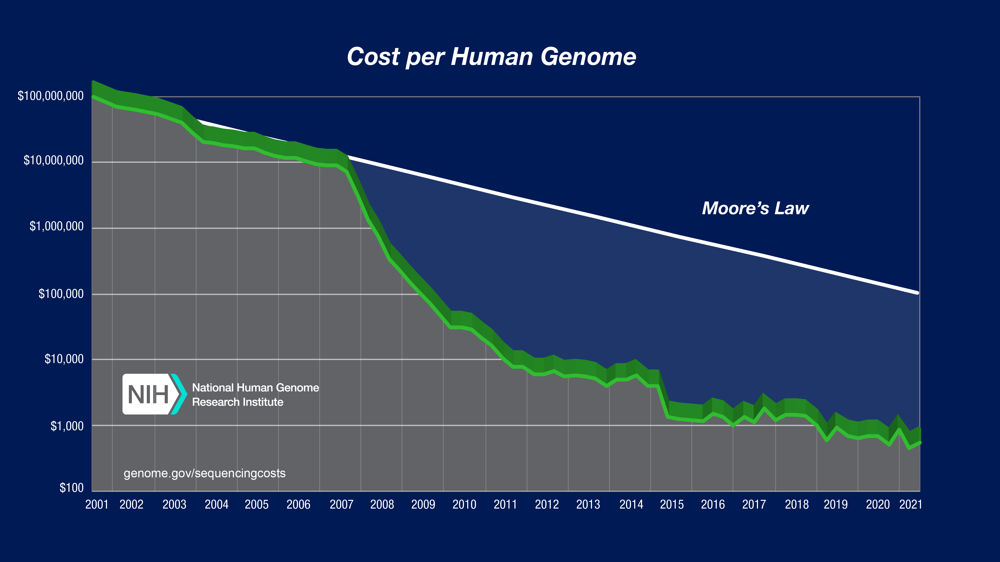
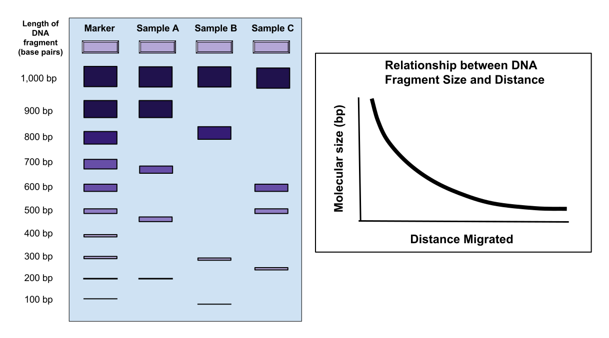
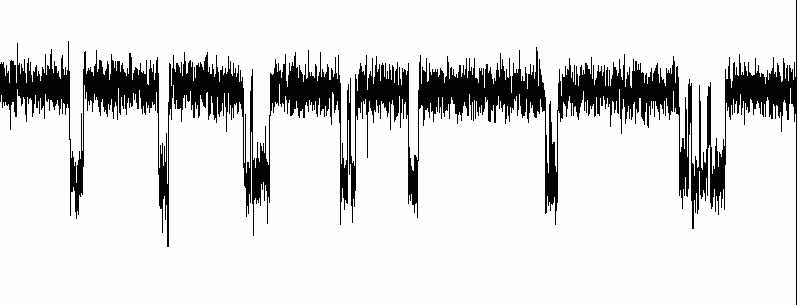
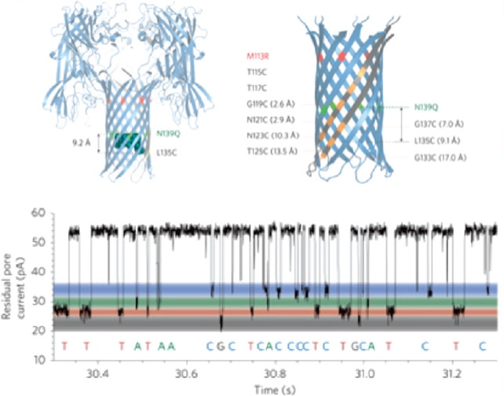
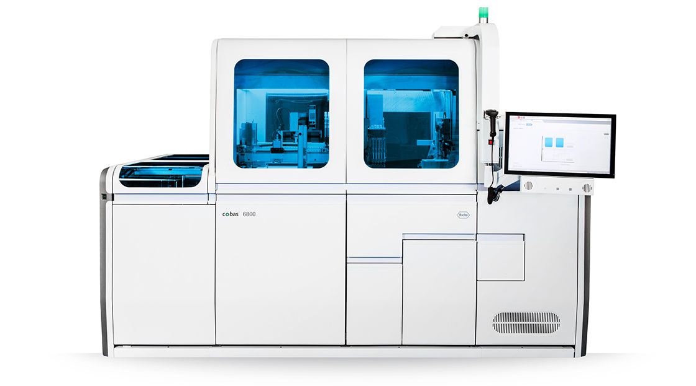

## Nanopore DNA Sequencing #### Primary analysis of single-molecule sensor data <br><br> ###### Jesse Clark ###### 2023 Notes: Hello. I'm a software engineer at Roche Diagnostics. I'd like to tell you about the work I've been doing on our nanopore sequencing instrument. I'm familiar with all the primary analysis algorithms and pipelines. First, some background about DNA sequencing Second, overview of nanopore teceh Third, how the data science depart operates at Roche
Conventional Sequencing
### Conventional Sequencing <!-- .element: style="display:none" --> <figure class="figure-right" style="width:50%">  </figure> [The Human Genome Project](https://www.genome.gov/human-genome-project) first sequenced the human genome (3.1 billion base pairs) in 2003. Since then, we have seen three distinct generations of sequencing technology, characterized by higher signal-to-noise ratio and lower costs. Notes: Incremental improvements due to massively parallel instruments, streamlined processes such as "click chemistry". Breakthroughs due to new techniques. --- ### Sequencing by Ligation <figure class="figure-right" style="width:45%">  </figure> - Cut DNA strands into fragments - Attach base-dependent fluorescence to the end of each fragment ("chain termination method") - Separate fragments by size ([Gel Electrophoresis](https://en.wikipedia.org/wiki/Gel_electrophoresis)) Signal gets weaker at longer read lengths. The sample can be amplified with [PCR](https://en.wikipedia.org/wiki/Polymerase_chain_reaction), but that introduces noise dependent on earlier noise. High [depth of coverage](https://en.wikipedia.org/wiki/Coverage_(genetics)) is needed to differentiate between mutations in the sample and mutations in the process, in order to reach a desired quality level. Notes: Roche is doing interesting work with neural network early interpretation of PCR curves. Faster turnaround time can open new markets. --- ### Sequencing by Synthesis Synchronized reaction and detection. For example, engineered nucleotides that fluoresce when added to a chain. Optical detection of fluorescence during DNA synthesis.
Nanopore Sequencing
### Nanopore Sequencing - Ion Channel <!-- .element: style="display:none" --> <figure class="figure-right">  <figcaption><small><i>Voltage across a single ion channel</i></small></figcaption> </figure> The [patch clamp](https://en.wikipedia.org/wiki/Patch_clamp) eletcrophysiology technique is used to measure voltage or current flow through a single ion channel. [Nanopore sequencing](https://en.wikipedia.org/wiki/Nanopore_sequencing) is based on threading a single strand of DNA through an ion channel and measuring the characteristic voltage signature of each nucleotide. This technique is sensitive enough to measure single molecules of native DNA without introducing noise before or after the main sequencing reaction. Notes: Data scientists can correlate non-synchronized data during analysis. --- ### Pore Threading <!-- .element: style="display:none" --> <figure class="figure-right">  <figcaption><small><i>Oxford Nanopore (2009)</i></small></figcaption> </figure> - Create a membrane with a single pore. Pore-forming toxins such as α-hemolysin can be produced by bacteria for this purpose. - Attach a DNA-threading enzyme to the pore. - Measure voltage across the pore as the DNA passes through it. <br style="clear:right"> Biochemical engineers can modify nucleotides to make their electric signatures more distinct ("sequencing by synthesis"). --- ### Roche High-Throughput Platform <figure class="figure-right">  </figure> - Custom chip with 8,000,000 single-pore wells and a general purpose rolling-shutter array of patch clamp sensors (Genia Technologies) - Engineered nucleotides with a ratcheting effect that regulates procession rate (Stratos Genomics) Notes: SBX makes it much easier to detect and prevent insertions and deletions, giving us a very high accuracy with fewer samples per base dwell.
Primary Data Analysis
### Primary Data Analysis <!-- .element: style="display:none" --> Primary analysis of sequencing data produces: - sequence of DNA base-calls - quality-control metrics - genome alignment (if applicable) These can then be passed into later analysis stages such as mutation calling. <br> **Algorithms need to be adapted to the specific chemistry they are working with.** Notes: Here is how we handle primary data analysis at Roche. --- ### Pipeline <img src="Primary Data Analysis.svg" style="width:90%" /> Notes: - Experiment metadata (chemical reagents, electric waveforms, relevant genome, ...) is specified in advance. Voltage data is collected as "frames" which consist of millions of 8-bit voltage readings, plus some "frame header" metadata. - Data is transposed from frame-major order into cell-major order, so that the complete record of a single cell is available in a single data chunk. Cells are subsampled randomly into chunks. These chunks are copied to cloud storage and tracked with an in-house database. - Data in the cloud is analyzed on-demand by a Docker image (with versions, branches, parameters, ...). Data chunks are analyzed in parallel and then the results are merged. Results include essential base-call information as well as extra information for algorithm development and tuning. - Data in the cloud can be viewed with an in-house data visualization tool. - Analysis results are used to train a neural network to perform base-calls in real time on the production instrument. --- ### Algorithms - Dysfunctional state detection (including valid pore lifetime) - Voltage normalization (open-channel voltage drifts over time) - Molecular trace detection - Level-calling - Base-calling - Genome alignment - Quality metrics (read length statistics, confidence of each base-call, ...) - Neural network training
### Closing <!-- .element: style="display:none" --> #### Doing now what patients need next <br><br> ##### Jesse Clark ###### `jesse@modusponens.org`